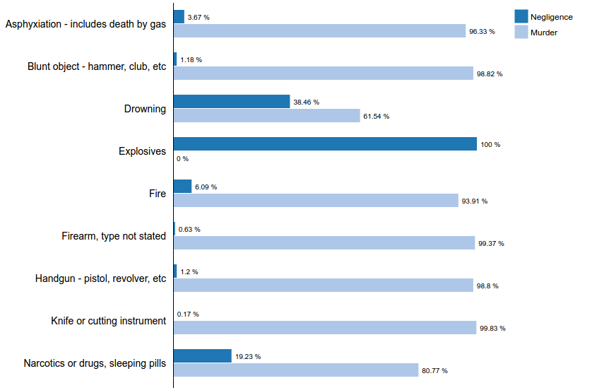

I have always had a strong interest in applying my data science skills to solve social related problems. At first, since I was not sure which particular dataset I would want to work on, my first step was to go to a couple of websites that host public data and search them using keywords like “ social” or “data for good”. After spending a lot of time looking at those websites, I thought crime-related data would be a great fit to both the project’s requirement and my own interest.
In fact, the dataset that I chose and used for the proposal was not the one I ended up using for the project. At first, I chose the mass shooting dataset from kaggle that claimed to list all the significant mass-shooting events starting from the 1980s. The data consisted of around 300 rows and 15 columns. This means the dataset only had around 300 mass-shooting events in total. It was not until I read the news about the recent mass shooting in California in early November that I realized I picked a wrong dataset. The news mentioned that this California mass shooting would be around the 300th time that a mass shooting occurred this year alone, so it made no sense that there could only be 300 incidents since the 1980s as the dataset stated. It was foolish of me to not double check the validity of my data when I acquired it.
Because of that, I had to spend a lot of time searching for a new data. I still went for the same theme, though it was not restricted to mass shooting in particular. Now that I realized some datasets out there were not valid, it became even harder to find a dataset. I had spent probably too much time finding for the good one because the data had to make sense and it also had to meet the requirements of having at least 200 rows and 15 columns. In the end, I settled with the homicide dataset from a murderdata.org, which was hosted by the Murder Accountability Project, a group that aimed to track and account for American homicides. The dataset listed all the homicides from 1976 to 2017. Originally, it consisted of 769,753 rows and 30 columns. As opposed to having a bad dataset earlier, I now faced a new problem: the dataset was probably too good. I really liked that it had a very thorough information but with its current state, it was hard to lay out a solid plan for a visualization. Also, the datafile was a bit too large. I even had problem uploading it to github using normal method. Thus, I decided to subset the data by using only the homicides from the year 2017 only (2018 data was not yet available). I also reduce from 30 to 16 potentially useful columns, although some of them were not that practical in the end.
The final version of the data are as follows:
Attributes : County, State, Year, Month, Homicide (murder vs. negligence), situation, victim age, victim sex, vctim race, victim ethnicity, offender age, offender offender sex, offender race, offender ethnicity, weapon, relationship, and circumstance.
Observations : 17441
Honestly, the design process was way more challenging than I had expected and I ended up spending more time here than I had planned. Since there were many attributes to choose from, I was not sure how to organize my visualization. I felt like I should have a single plot that stood as a main idea and then spanned out from there. However, I discovered that if I only had one plot as a main visualization, the interactive features might not actually be as useful as it sounded. For example, if I started with a US map. Then if I looked at the number of deaths for each month for each state for each circumstance, there would be too much subset and the number might be too small in the end. So I figured it was better to have a few main visualizations that worked in parallel, so that more useful discoveries can be extracted since users could have more than one option to decide from which angle to start diving into.
To convert the initial data to a set of visualizations, many preprocessing and exploratory steps were necessary. These steps were completed in R and Excel. Since different types of visualizations in d3 required a different type of input data, I had to use R to convert and organize data into different formats. And sometimes simply using Excel to manually manipulate the data was easier. One example of using R to process data is when creating a heatmap, I need to have a data in the format of a frequency table. I could easy run through the original data using javascript or I could do it outside using R, which was more convenient and less time consuming.
Throughout the project, I made a lot of sketches, although only a few of them were actually tranformed into actions. Examples are as follows.
The visualizations comprise of both interactive and static features. It might be more fancy to have as many interactive features as possible, but it may not be appropriate in term of usefulness. My final work consists of 3 main visualizations.
1. Map
2. Bar chart
3. Heatmap
The map allows users to explore the homicide data from a geological perspective. The states are separated using solid borderlines. Each of them is filled with different colors, depending on the total number of deaths. There are four colors in total since the range of number is divided using quantiles. It was made sure that colors were distinct between each other in order to avoid confusion. When hovering the mouse over a state, a number of deaths would show up. In addition, two pie charts would appear. One of them shows the number of male vs. female of the victims while the other one shows the number of male vs. female of the offenders. Those pie charts change simultaneously when the mouse moves to other states. I believe it makes sense to use pie charts here because gender is a binary variable, so pie charts are not likely to be confusing since there are only two segments. Note that the number of male plus female might not always add up to the number of deaths shown on the map because there are also unknown data regarding gender.
The bar chart section consists of an interactive month distribution plot and a static pair plot. For the distribution plot, users can choose which type of circumstances they are interested in from the drop-down menu, which is placed right above the plot. Similar to the state map, when hovering the mouse over a bar, a pair of gender pie charts would show up. The difference is that they are in term of months instead of states. Below you can find a static pair plot comparing each weapon for whether it is death by murder or manslaughter by negligence. I made this static because some weapon has a low number already so it should not be subset further. I use pair plot to make it easy to compare the two scenarios among each weapon.
The static heatmap shows the relationship between weapons and relationships. Heatmap is the best option here because we are comparing two categorical variables. The general way of comparing them is to create a frequency table, using each variable as row and column. When transforming the frequency table into a visualization, it becomes a heatmap.
The followings are some findings from my visualization.
1.) California, Texas, and Florida have the most number of deaths.
2.) Alabama has the least number of deaths.
3.) Gun is the most common weapons.
These findings sort of make sense given that these states have a large population. Also you might see in the news quite often that there frequently are shootings in those three states.
Also, I found out that there is quite a large number for ‘Child killed by babysitter’(32 in total). This is a bit surprising to me because I did not even realize this situation happened before starting the project. Below is the screenshot from my visualization.
Another interesting finding is that explosives, drowning, and drugs are the top means for manslaughter by negligence. Here is the screenshot. Note that the whole graph cannot be fitted in one screenshot so I just took the key part.
I have learned a lot during this project. I guess the most important lesson is that it is even more difficult to think about what sort of design I should come up with than how to create a visualization itself. Thus, it is important to make sure I have enough time to brainstorm ideas. I did not realize it would take so much time so I don’t think I left enough time for myself. Also, as mentioned earlier, I made mistake during the data finding processing and it really ruined the process as a whole because a lot of time had to be spent looking for the new data. I am not sure if it was a good or bad thing but I was probably a bit too picky about the data choice so that I ended up spending too much time looking for it. In the end , I did find a very good one but I should have had more time to build the visualization.
The future work for this is probably to try incorporate more data. I mentioned earlier that that dataset was quite large so I decided to use only the data from 2017. One direction to go is to break the data into multiple smaller files, each representing one year only. I attempted to do this but did not have enough time to blend it smoothly with the current code that I have.